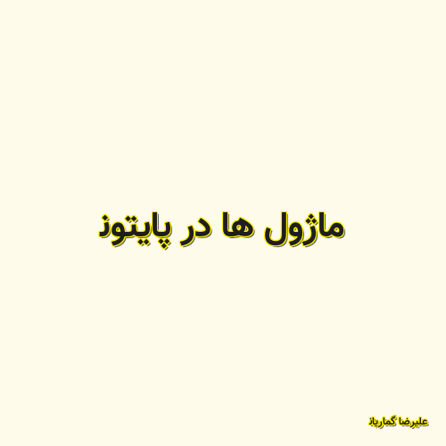

✖

ماژول ها در پایتون
در زبان های برنامه نویسی یکسری بسته های نرم افزاری ای وجود دارند که دارای توابع و برنامه های کاربردی در برنامه نویسی هستند به نام "کتابخانه ها" که در زبان برنامه نویسی پایتون به اسم "ماژول" شناخته میشوند که به برنامه نویس کمک می کنند که راحت تر , سریع تر و دقیق تر برنامه بنویسد.در این ویدیو علیرضا گماریان قصد دارد شما با ماژول ها آشنا کنید و نحوه استفاده از آنرا آموزش دهد.
علیرضا گماریان 2020-08-13 11:53:00 مطالعه پست گزارش خرابی لینک / محتوای مجرمانه / تغییر محتویات لینک